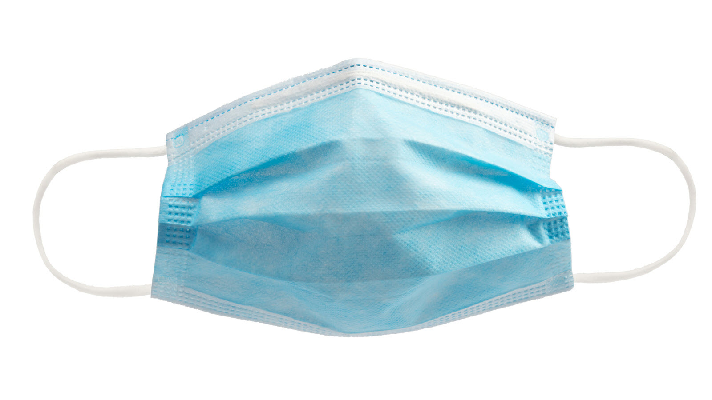

A surgical mask is a disposable type of mask intended for medical use. It primarily protects the users nose and mouth from droplets that contain germs, and can filter out large particles in the air. It also protects other people from germs the wearer could possibly have.
 Pros:
- Protects against fluids
- Filters out large air particles
- Protects others from wearer's germs
Cons:
- Must be disposed of after a maximim of three uses
- Not washable
- In high demand for medical professionals
Actually, its best not to try and get a surgical mask since the health care industry has so few of them. You can find them from medical suppliers, but an everyday person can get the same benefits from masks less highly in demand.